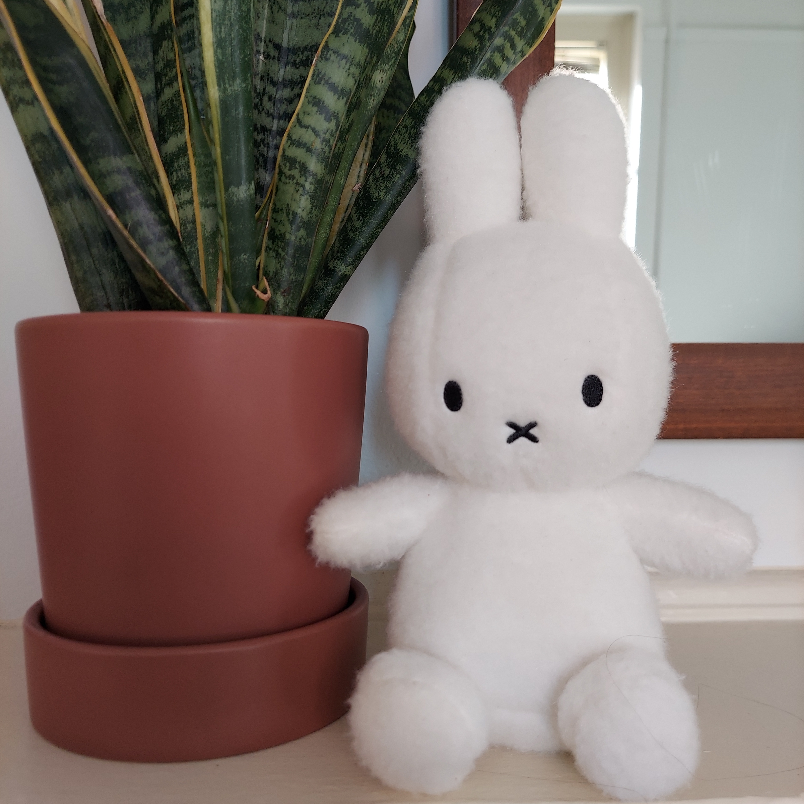

Howdy hey! I'm Lily Wasko :3
I'm a fourth-year undergraduate student at the University of Virginia currently studying Computer Science and Environmental Thought & Practice. Outside of the programming projects I've worked on, I like to spend my free time playing indie games (and devloping my own), writing short stories, reading novels, taking care of my plants, making tea, and hanging out with my collection of stuffed animals.
I'm currently reading Last Night at the Telegraph Club by Malinda Lo, which I've been thoroughly enjoying, with Alchemy and a Cup of Tea by Rebecca Thorne and The Long Way to a Small, Angry Planet by Becky Chambers up next on my list. My favorite books of all time are We Are Okay by Nina LaCour and Private Rites by Julia Armfield.
My (small) collection of plants inlcudes a Variegated Snake Plant (Dracaena trifasciata 'Laurentii'), the bottom half of which is pictured alongside one of my plushies; a Baltic Blue Pothos (Epipremnum pinnatum 'Baltic Blue'); and a Monstera deliciosa.
Contact info:
To reach out, please send an email to lilywasko [at] gmail [dot] com.